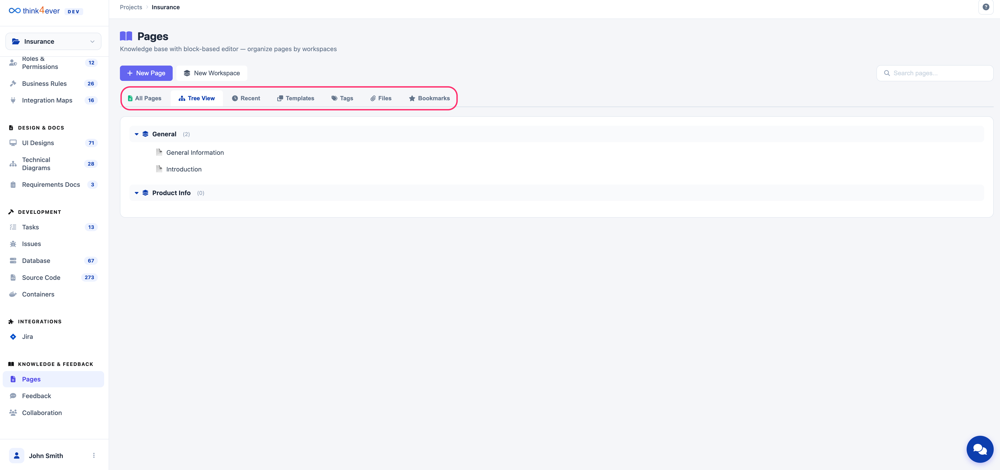
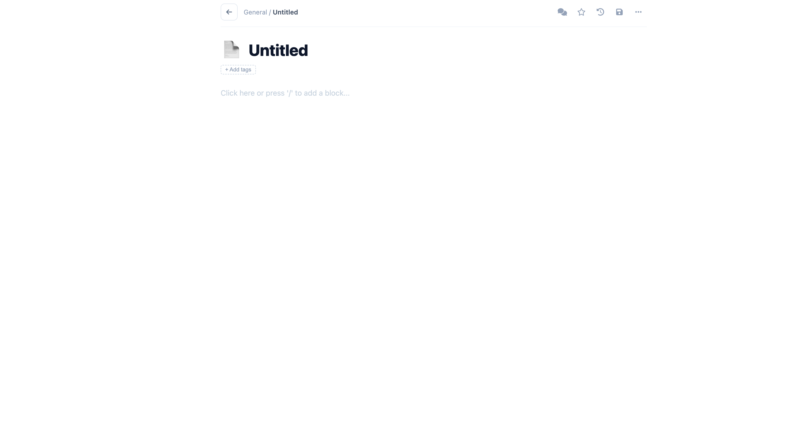

Pages
The Pages module serves as the central internal knowledge base for your project. Utilizing a block-based editor, it allows teams to document processes, store meeting notes, and create structured project wikis organized by dedicated workspaces.
The dashboard is designed to help you organize and retrieve information quickly. Upon entering the module, you have several primary navigation options:
- Standard Operating Procedures (SOPs): Guidelines for how the team should handle specific technical tasks.
- Project Wikis: Centralized technical specs, brand guidelines, and onboarding materials.
- Shared Assets: A repository for images, files, and templates used across the project.
- All Pages: The default view showing every document you have access to.
- Tree View: A hierarchical folder-style structure to visualize how pages and sub-pages are nested.
- Recent: Quickly jump back into the documents you've edited or viewed most recently.
- Templates: Access pre-defined layouts to standardize documentation (e.g., API docs, meeting minutes).

Organizing Information
To keep the knowledge base clean and searchable, information is grouped into two main levels:
- Workspaces: Click + New Workspace to create high-level containers (e.g., "Engineering," "Marketing," or "Legal"). Each workspace acts as a separate environment for related documents.
- Pages: Within a workspace, click + New Page to start a new document. You can tag pages, attach files, and bookmark important ones for instant access.
Using the Block-Based Editor
The editor allows for flexible content creation by treating every element (text, images, code snippets) as a "block."
- Dynamic Layouts: Easily rearrange content by dragging and dropping blocks.
- Rich Media Support: Embed images, videos, and technical diagrams directly into your documentation.
- Collaborative Features: Use the Collaboration sub-menu to see who is currently working on a document and track version history.
Search and Discovery
As your knowledge base grows, use the secondary navigation bar to find specific assets:
- Tags: Filter pages based on custom keywords (e.g., #SprintPlanning).
- Files: A centralized view of all documents and images uploaded across various pages.
- Bookmarks: Access your "pinned" pages that require frequent reference.
- Search Bar: Use the global search in the top-right corner to find specific text strings across all workspaces.
Management Actions
If your knowledge base is empty, as shown in the initial setup, you can use the + Create First Page button in the center of the screen to begin building your project's repository.
Create a Page

To create a page within the Think4ever AI ecosystem, follow these steps to organize your documentation and knowledge base effectively.
-
Navigate to the Pages Module
On the left-hand sidebar, scroll down to the KNOWLEDGE & FEEDBACK section and click on Pages. This will open your knowledge base dashboard. -
Choose Your Starting Point
Depending on the current state of your project, you have two ways to begin:- If the workspace is empty: Click the large purple + Create First Page button in the center of the screen.
- If you already have documentation: Click the + New Page button located in the top-left corner of the header.
-
Select a Workspace
Before the editor opens, you may be prompted to select which Workspace (e.g., Engineering, Marketing, or General) the page should belong to.
Note: If you haven't created a workspace yet, click + New Workspace first to create a container for your new pages. -
Configure Page Details
Once the editor loads, you will typically define the following:- Title: Give your page a clear, searchable name (e.g., "API Integration Guide").
- Icon/Cover: (Optional) Add a visual identifier to make the page stand out in the Tree View.
- Tags: Add keywords like #documentation or #sprint1 to help with filtering later.
-
Add Content using Blocks
The editor is block-based, meaning you can insert different types of content by typing / or clicking the add icon:- Text Blocks: Standard headings and paragraphs.
- Media Blocks: Drag and drop images or videos directly onto the page.
- Technical Blocks: Insert code snippets or link to existing Technical Diagrams from your project sidebar.
-
Save and Organize
- Auto-Save: Most changes are saved in real-time.
- Tree View: Use the "Tree View" tab in the dashboard to drag and drop your new page into a specific hierarchy or nest it under a parent page.
- Bookmarks: If this is a page you will refer to often, click the Bookmark icon to pin it to your favorites list.
Quick Tip: If you're unsure where to start, click the Templates tab before creating a new page to see pre-formatted layouts for meeting notes or project requirements.